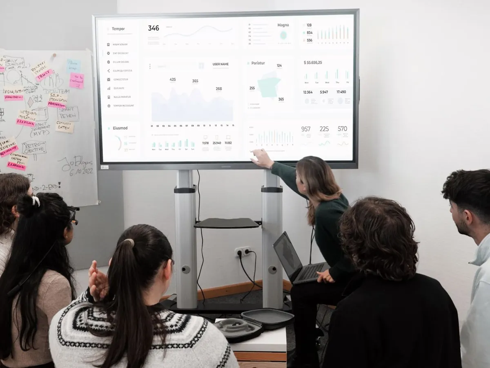
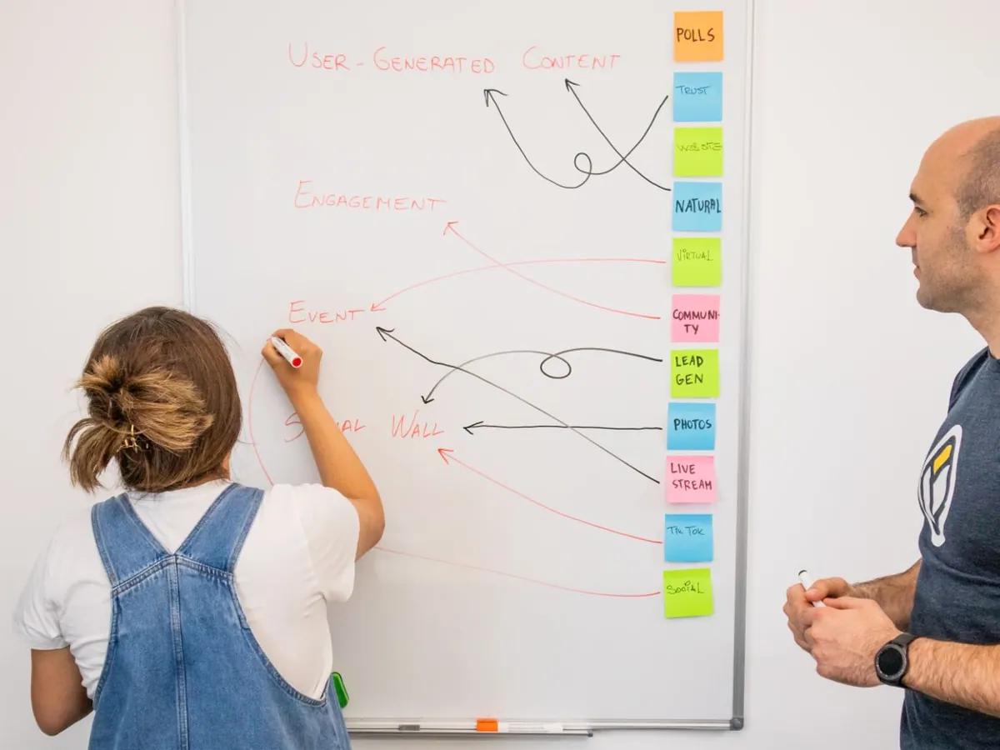

The side-by-side card, with the photo fading into the card. Three ways, then the service page a card opens, which uses the same photo. Switch the photo look at the top right and hover the cards. Nothing on the live site has changed.
Side to side fade
The photo fills the left of the card and melts into the white towards the text, so photo and text blend into one piece. On a phone the card stacks and the photo fades downwards instead.

02Data Analytics & Predictive ServicesOur consultancy excels in Data Analytics and Predictive Services, providing insights for informed decision-making.Explore service
03Business Process Automation and Digital Transformation ServicesOur consultancy focuses on driving business efficiency and innovation.Explore service04Data Center/Infrastructure ServicesOur consultancy excels in providing robust Data Center and Infrastructure Services, ensuring reliability and scalability.Explore service05Cloud Services & MigrationOur consultancy excels in Cloud Services and Migration, ensuring seamless transitions and optimized cloud environments.Explore service06Partner Services – MSFT Azure, AWS, GCP, OCISpecializing in partner services, our consultancy ensures optimal utilization of cloud platforms.Explore serviceTop to bottom fade
The photo sits at the top of the card and melts downwards into the white, with the text rising out of the fade. Three cards per row.
Side to side fade, dark card
Like A1, but on a navy card in the colours of the site’s hero, so the photo fades into the dark with a faint cyan glow.
The service page you land on
Clicking a card opens its service page, which shows the same photo, here with a soft fade on its left edge into the page. Today the Generative AI page shows the old “AI” chip picture; with this change every card and its page match.
Generative AI
Generative AI creates new text, images and designs from patterns it has learned. For a business, the value comes from pointing it at your own data. Hamdaz builds generative AI tools for organisations that want faster content, better customer conversations and fewer repetitive writing tasks. Our work covers AI-driven content creation, automated design and prototype generation, chatbot development and deepfake detection. We use OpenAI GPT models for natural language processing, and fine-tune them with your documents, product information and customer queries, so the output reflects your business rather than general internet text.